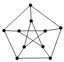

Several Top Secret Objects are connected by an underground railway in such a way that each Object is directly connected to no more than three others and from each Object one can reach any other Object by going and by changing no more than once. What is the maximum number of Top Secret Objects?
Evaluation. From a given Object one can reach three Objects in one “go”, and by changing – one can reach $2 \times 3$ = 6 Objects. Therefore, there are no more than 10 objects. An example with 10 objects is shown in the figure below.
.
10.